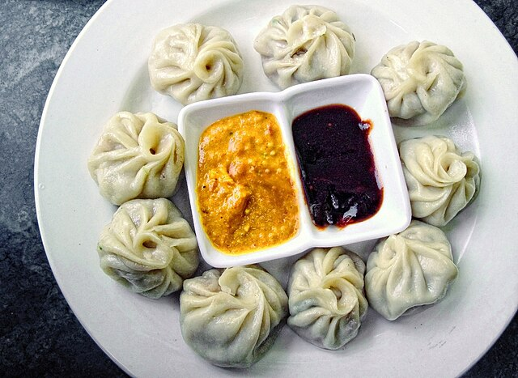

Momo
Description
Traditionally, momos are prepared with ground/minced meat, potatoes, and leek filling.
Nowadays, the fillings have become more elaborate and momos are prepared with virtually any combination of ground meat,
vegetables, tofu, mushrooms, paneer cheese, soft chhurpi (local hard cheese) and vegetable and meat combinations.

Ingredients
- Minced meat
- Potatoes
- Leak
Steps in making
- Take 1 cup all-purpose flour, ¼ teaspoon salt and ½ teaspoon oil in a bowl. Mix well with a spoon.
- Add 2 to 3 tablespoon water in parts and begin to knead to a firm dough. Do not make the dough soft as then it becomes difficult to shape the dumplings.
- Cover the dough with a moist napkin or kitchen towel. Let the dough rest for 30 minutes.
- Finely chop the vegetables. You will need 1.5 to 1.75 cups of finely chopped veggies. You can also use a food processor to finely chop vegetables like cabbage, carrots, french beans.
- Heat oil in a thick bottomed frying pan or wok. Add ½ teaspoon of finely chopped garlic. Sauté for 2 to 3 seconds on medium-low heat.
- Add spring onion whites (2 small spring-onions which have been chopped finely). Stir and sauté for 10 to 15 seconds on medium-low heat.
- Add spring onion whites (2 small spring-onions which have been chopped finely). Stir and sauté for 10 to 15 seconds on medium-low heat.
- Add all the finely chopped vegetables.
- Increase the flame and stir fry the vegetables on a medium to high heat. If you have not used a thick bottomed pan, then sauté the veggies on a low to medium heat.
- Continue to stir fry on a medium to high flame for 2 to 3 minutes more. Switch off the heat and add 1 to 2 tbsp of the spring onions greens.
- The vegetable stuffing is ready. Let the stuffing cool completely.
- Serve veg momos hot with momos chutney or red chilli-garlic chutney, spicy schezwan sauce or tomato sauce. They also go best with a spicy sauce and should be eaten hot.
Home